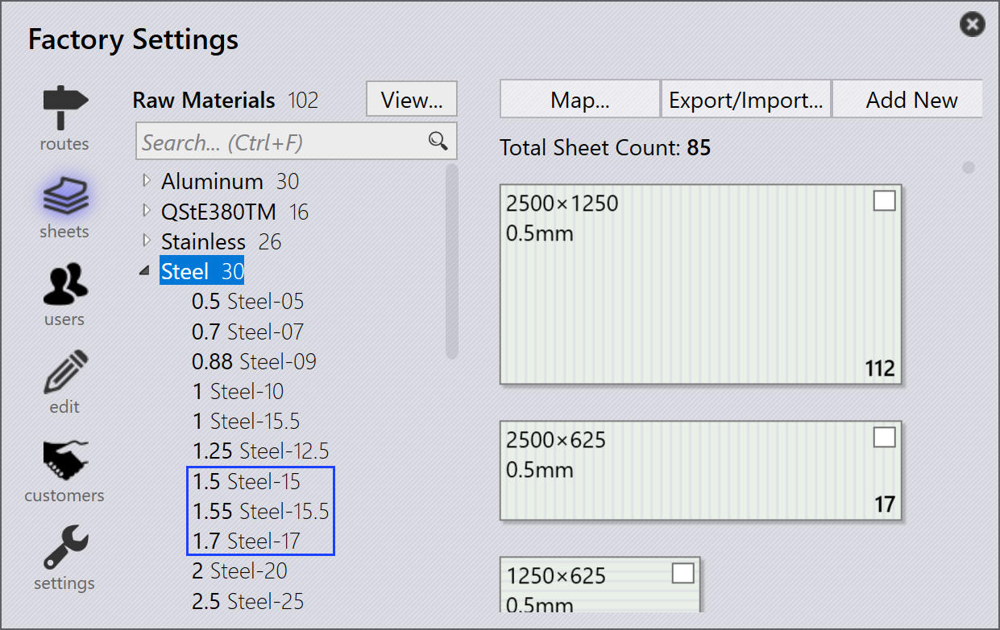

Import

Output settings
Save flat pattern - Aktivieren Sie diese Option, damit das Abwicklungsmuster eines importierten Teils gespeichert wird.
Format for flat pattern - Diese Option wird verwendet, um entweder DXF- oder GEO-Dateiformate auszuwählen.
Flat pattern destination - Dies ist der Speicherort, an dem das Abwicklungsmuster gespeichert wird.
Import settings
Units for DXF files - Dies ist die Maßeinheit, mit der eine DXF-Datei importiert wird. Der Benutzer kann zwischen mm oder Zoll wählen.
Material lookup keys - Mehrere Sucheinträge können mit einem Komma-Trennzeichen zugewiesen werden. Wenn ein Teil importiert wird, verwendet TruSmartCAM diese Schlüssel zur Suche nach Materialwerten. Die gefundenen Werte werden dann zur Auflösung des Rohmaterials verwendet. Die Originalwerte werden in den verschiedenen Eigenschaften des Teils gespeichert.
Revision lookup keys - Wenn ein Teil importiert wird, wird der Revisionswert aus der Rohteiledatei (die importierte Teiledatei) mit dem vorhandenen Revisionswert im Repository verglichen. Der Import wird abgebrochen, wenn die Revision identisch ist. Die benutzerdefinierte Feldzuordnung wird nun auch für DXF-Dateien unterstützt. Für DXF-Dateien werden die benutzerdefinierten Felddaten aus der Textebene in der Zeichnung oder einem PPI-Anhang extrahiert.
Use geometry comparison on same CAD revision - Vergleicht die Geometrie beim Import eines Teils mit derselben CAD-Revision und fordert den Benutzer auf, den Import zu ersetzen oder zu überspringen, wenn Unterschiede erkannt werden. Weitere Details finden Sie unter Import configuration.
Part name keys - Diese Option funktioniert ähnlich wie die Material- und Revision lookup keys. Legen Sie einen oder mehrere Part name keys fest, um den PPI Part name anstelle des Dateinamens als Teilenamen zu verwenden.
Thickness lookup keys - Mehrere Sucheinträge können mit einem Komma-Trennzeichen zugewiesen werden. Wenn ein Teil importiert wird, verwendet TruSmartCAM diese Schlüssel zur Suche nach Dickenwerten. Die gefundenen Werte werden dann zur Auflösung der Dicke verwendet. Die Originalwerte werden in den verschiedenen Eigenschaften des Teils gespeichert.
Thickness comparison fudge - Dies wird bei der Suche nach dem Rohmaterial verwendet, wenn ein Teil importiert wird. TruSmartCAM versucht, das Rohmaterial aufzulösen, nachdem Materialname und Dicke analysiert wurden. Weitere Informationen finden Sie im Abschnitt Dickentoleranz unten.
Identify shapes after a flat is imported - Wenn ein Teil importiert wird, können innere Formen innerhalb des Teils automatisch erkannt und identifiziert werden.
Shape identification fudge - Der Formidentifikations-Toleranzwert kann eingestellt werden auf:
-
Globale Ebene - Dieser Wert wird als Standard für alle Formen verwendet.
-
Individuelle Formebene - Der Standardwert kann überschrieben werden, indem der Toleranzwert auf der individuellen Formebene festgelegt wird. Die Auswahl der Form im Shape Library-Dialog zeigt den Toleranzwert an. Standardmäßig ist dieser auf 0 gesetzt, und der globale Standardwert wird für solche Formen verwendet.
Rotate flat horizontally - Generell sind Schneidmaschinentische rechteckig und breiter. Um die Bearbeitungsmachbarkeit zu verbessern, wird das Teil nach dem Import entlang der Teilebreite gedreht.
Part rotation threshold - Legen Sie diesen Wert als Mindestgröße für die Rotation fest. Jedes Teil, das kleiner als der festgelegte Wert ist, wird nicht gedreht.
Misc settings
Enable pre-import external tools - Aktivieren Sie die Option für externe Pre-Import-Tools, um den Creo Reader zu aktivieren. TruSmartCAM lädt die vorextrahierten Familieninstanzen des abgelegten Teils hoch. Bitte beachten Sie, dass die Instanzextraktion während des Teil-Uploads (als Pre-Import-Vorgang) durchgeführt wird, daher muss die Creo-Software auf dem Computer installiert sein, von dem das Teil hochgeladen wird.
Ignore drawing colors in Flat thumbnails for clarity - Aktivieren Sie diese Option, um schärfere Graustufen-Miniaturbilder zu generieren. Die Ebenenfarben und Textentitäten werden zugunsten der Bildklarheit ignoriert.
Use only one Engine for all import tasks - Wenn aktiviert, wird nur ein Engine-Kern für wichtige Aufgaben verwendet.
Dickentoleranz
Die Thickness comparison fudge wählt den nächsten Blechdickenwert aus, wenn eine gewünschte Blechdicke im Bestand nicht verfügbar ist, indem der Dickenwert der Bleche im Bestand verglichen wird.
Nehmen wir zum Beispiel Folgendes an:
-
Wir haben ein Teil mit einer Blechdicke von 1,6 mm und Material Stahl.

-
Der Wert Thickness comparison fudge beträgt 0,1 mm.

-
Der Bestand enthält Stahlbleche mit den Dicken 1,5 mm, 1,55 mm und 1,7 mm.

TruSmartCAM wählt ein Blech mit dem nächstliegenden Dickenwert aus, nachdem der Wert Thickness comparison fudge (0,1 mm) mit dem importierten Element (1,6 mm) verglichen wurde. In diesem Fall wird 1,55 mm ausgewählt.